10. 附录
本文将说明如何在 Windows 7 至 10 系统上安装本文档中使用的工具。读者应根据自身环境调整这些操作步骤。
10.1. 安装 JDK
最新版本的 JDK 可通过以下网址获取：[http://www.oracle.com/technetwork/java/javase/downloads/index.html]（2016 年 4 月）。下文将把 JDK 安装文件夹简称为 <jdk-install>。
 |
10.2. 安装 Android SDK Manager
 |
- 关于为何需要 Android SDK，请参见 [1]；
Android SDK 管理器可通过 [https://developer.android.com/studio/index.html#downloads] 访问（2016年5月）。
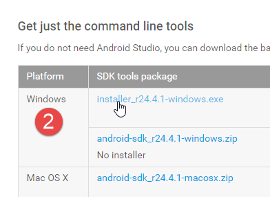 |
安装 SDK Manager。我们将把它的安装目录称为 <sdk-manager-install>（ ）。启动它。
该项目已配置为（参见第 9.3.2 节）：
- SDK API 23 [2]；
- SDK 构建工具 23.0.3 [3]；
- SDK 工具 25.1.3 [4]
请确保您已下载这些组件。
10.3. 安装 Genymotion 模拟器管理器
Android SDK 随附的模拟器运行缓慢，因此不建议使用。Genymotion 公司提供了一款高性能模拟器。您可通过以下网址获取：[https://cloud.genymotion.com/page/launchpad/download/]（2016 年 5 月）。
您需要注册才能获取个人版。请下载包含 VirtualBox 虚拟机的 [Genymotion] 产品：

此后我们将把 [Genymotion] 的安装文件夹称为 <genymotion-install>。启动 [Genymotion]。然后下载一个平板电脑的镜像：
 |
- 在 [1] 中，添加 [2] 中所述的虚拟终端；
10.4. 安装 IntelliJ IDEA Community Edition IDE
[IntelliJ IDEA Community Edition] IDE 可从 [https://www.jetbrains.com/idea/#chooseYourEdition] 获取：
 |
安装该 IDE 并启动它。
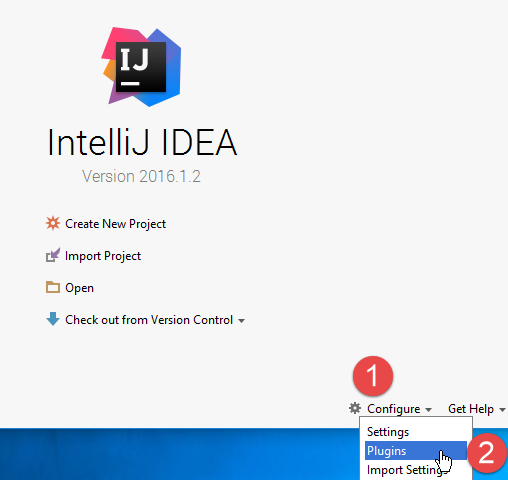 |  |
- 在 [1-2] 中配置插件；
- 在 [3-4] 中，将 [Genymotion] 插件添加到 IDE 中；
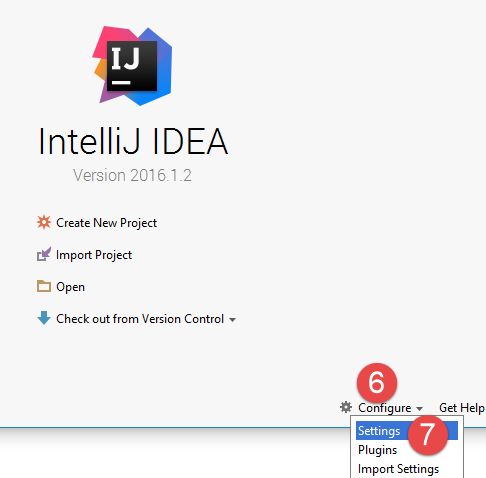 |
- 在 [6-7] 中，配置 IDE；
 |  |
- 在 [8-9] 中，指定 [Genymotion] 模拟器管理器的安装文件夹；
 |
- 在 [12-13] 中，配置默认项目类型；
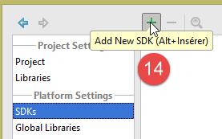 |  |
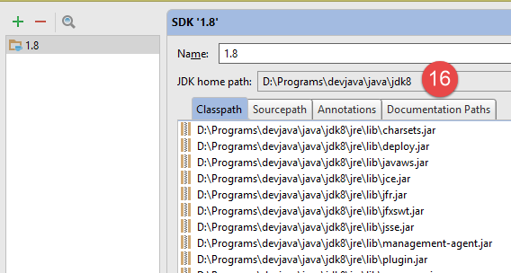 |
- 在 [14-16] 中，配置 JDK；
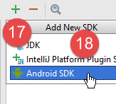 |
 | 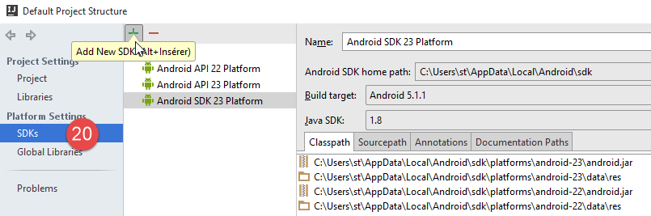 |
- 在 [17-20] 中，配置 Android SDK；
 |
- 在 [21-22] 中，指定项目的默认 JDK；
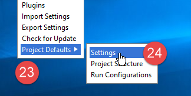 | 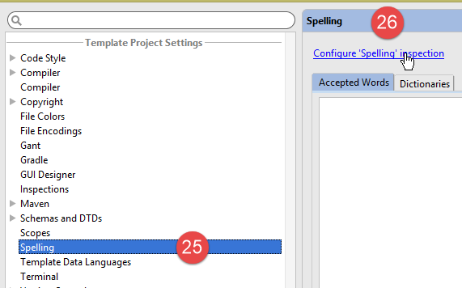 |
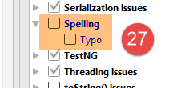 |
- 在 [23-27] 中，禁用拼写检查功能（该功能默认设置为英语）；
 |  |
- 在 [28-32] 中，选择您想要的快捷键类型。您可以保留 IntelliJ 的默认设置，也可以选择您更习惯的来自其他 IDE 的快捷键；
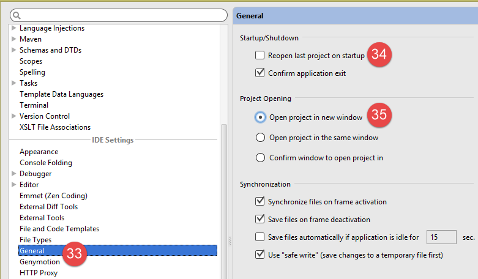 |
- 在[33-35]中，配置集成开发环境（IDE）以支持多个项目。它可以在同一个窗口或不同的窗口中管理多个项目；
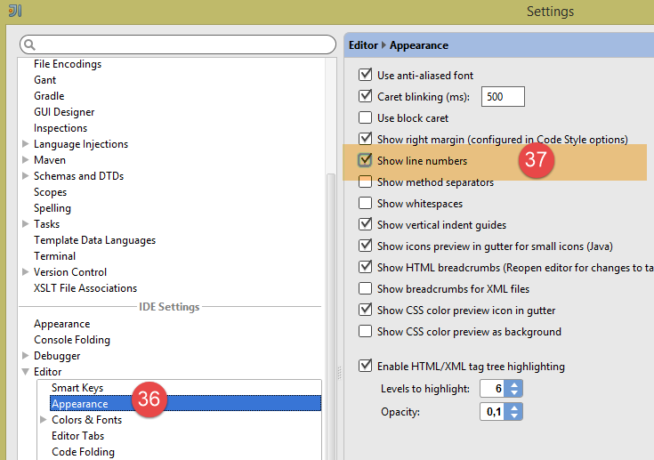 |
- 在[36-37]中，默认启用行号显示。这将帮助您快速定位引发异常的行；
10.5. 使用示例
示例的 IntelliJ IDEA 项目可在此处获取。第 1.3 节介绍了如何打开这些项目。
10.6. Java 中的 JSON 处理
[Spring MVC] 框架在开发者不知不觉中使用了 [Jackson] JSON 库。为说明 JSON（JavaScript 对象表示法）的含义，我们在此展示一个程序：该程序将对象序列化为 JSON，并通过反序列化生成的 JSON 字符串来重建原始对象。
'Jackson' 库允许您构建：
- 对象的 JSON 字符串：new ObjectMapper().writeValueAsString(object);
- 从 JSON 字符串构建对象：new ObjectMapper().readValue(jsonString, Object.class).
这两种方法都可能抛出 IOException。以下是一个示例。
 |
上述项目是一个 Maven 项目，其 [pom.xml] 文件如下：
<?xml version="1.0" encoding="UTF-8"?>
<project xmlns="http://maven.apache.org/POM/4.0.0"
xmlns:xsi="http://www.w3.org/2001/XMLSchema-instance"
xsi:schemaLocation="http://maven.apache.org/POM/4.0.0 http://maven.apache.org/xsd/maven-4.0.0.xsd">
<modelVersion>4.0.0</modelVersion>
<groupId>istia.st</groupId>
<artifactId>json</artifactId>
<version>1.0-SNAPSHOT</version>
<dependencies>
<dependency>
<groupId>com.fasterxml.jackson.core</groupId>
<artifactId>jackson-databind</artifactId>
<version>2.3.3</version>
</dependency>
</dependencies>
</project>
- 第 12–16 行：包含 'Jackson' 库的依赖项；
[Person] 类如下所示：
package istia.st.json;
public class Personne {
// data
private String nom;
private String prenom;
private int age;
// manufacturers
public Personne() {
}
public Personne(String nom, String prénom, int âge) {
this.nom = nom;
this.prenom = prénom;
this.age = âge;
}
// signature
public String toString() {
return String.format("Personne[%s, %s, %d]", nom, prenom, age);
}
// getters and setters
...
}
[Main] 类如下所示：
package istia.st.json;
import com.fasterxml.jackson.databind.ObjectMapper;
import java.io.IOException;
import java.util.HashMap;
import java.util.Map;
public class Main {
// the serialization / deserialization tool
static ObjectMapper mapper = new ObjectMapper();
public static void main(String[] args) throws IOException {
// creation of a person
Personne paul = new Personne("Denis", "Paul", 40);
// json display
String json = mapper.writeValueAsString(paul);
System.out.println("Json=" + json);
// person instantiation from Json
Personne p = mapper.readValue(json, Personne.class);
// person display
System.out.println("Personne=" + p);
// a picture
Personne virginie = new Personne("Radot", "Virginie", 20);
Personne[] personnes = new Personne[]{paul, virginie};
// json display
json = mapper.writeValueAsString(personnes);
System.out.println("Json personnes=" + json);
// dictionary
Map<String, Personne> hpersonnes = new HashMap<String, Personne>();
hpersonnes.put("1", paul);
hpersonnes.put("2", virginie);
// json display
json = mapper.writeValueAsString(hpersonnes);
System.out.println("Json hpersonnes=" + json);
}
}
执行此类将产生以下屏幕输出：
示例要点：
- 用于 JSON/对象转换所需的 [ObjectMapper] 对象：第 11 行；
- [Person] 到 JSON 的转换：第 17 行；
- JSON 转 [Person] 的转换：第 20 行；
- 两个方法均抛出的 [IOException]：第 13 行。
目录
1 引言 5
1.1 背景 5
1.2 使用的工具 6
1.3 示例代码 6
2 引言示例 9
2.1 示例应用程序的架构 9
2.2 可执行文件 9
2.3 同步接口 11
2.4 同步调用 12
2.5 测试同步调用 13
2.6 异步接口及其实现 14
2.7 异步调用 16
2.8 测试异步调用 19
2.8.1 使用调度器 [Schedulers.io] 20
2.8.2 使用调度器 [Schedulers.computation] 20
2.8.3 使用调度器 [Schedulers.newThread] 21
2.8.4 使用调度器 [Schedulers.trampoline, Schedulers.immediate] 22
2.9 边界情况 22
2.10 结论 24
3 泛型类和方法的签名 27
4 Java 8 lambda 表达式 32
4.1 示例-01 - 功能接口与lambda 32
4.2 示例-02 - Predicate<T> 函数接口 34
4.3 示例-03 - Function<T,R> 函数接口 37
4.4 示例-04 - Consumer<T> 函数接口 38
4.5 示例-05 - 函数接口 BiConsumer<T,U> 40
4.6 示例-06 - BiFunction<T,U,R> 函数接口 41
4.7 示例-07 - Supplier<T> 函数接口 43
5 Java 8 中的 Stream<T> 类型 45
5.1 示例-01 - Stream 类 45
5.2 示例-02 - 流元素的并行处理 47
5.3 示例 3 - 流元素的并行处理 48
5.4 示例-04 - 过滤数据流 50
5.5 示例-05 - 从 Stream<T1> 创建 Stream<T2> 52
5.6 示例-06 - Stream<T> 类的其他方法 53
5.6.1 [findFirst] 54
5.6.2 [findAny] 55
5.6.3 [skip] 56
5.6.4 [limit] 58
5.6.5[计数] 59
5.6.6[最大值, 最小值] 60
5.6.7[reduce] 63
5.6.8[排序] 63
5.6.9[anyMatch, noneMatch, allMatch] 65
5.6.10[collect(Collectors.groupingBy)] 65
5.6.11[distinct] 67
5.6.12[flatMap] 68
5.6.13 基本数字流方法 71
6RxJava 库中的函数接口 72
6.1 示例-01：[Action0] 函数接口 72
6.2 示例 02 和 03：[Actioni] 函数接口 73
6.3 示例-04、05：功能接口 [Funci] 74
7 RxJava 库 77
7.1 创建和订阅可观察对象 77
7.1.1 示例-01：[Observable.from] 方法 77
7.1.2 示例-03：Observer 类 82
7.1.3 示例-04：[Observable.create] 方法 84
7.1.4 示例-05：[示例-04]的重构 86
7.2 执行线程、观察线程 88
7.2.1 示例-06：位于 [main] 之外的线程中的可观察对象和观察者 88
7.2.2 示例-07：位于两个不同线程中的可观察对象和观察者 90
7.3 预定义的可观察对象 92
7.3.1 示例-08：[Observable.range] 方法 92
7.3.2 示例-09：Observable 的 [interval, take, doNext] 方法 96
7.3.3 示例-10/12：Observable.的 [error, empty, never] 方法 98
7.4 多线程 102
7.4.1 例13：操作线程、观察线程 103
7.5 多个可观测量的组合 106
7.5.1 示例 14：使用 [Observable.merge] 合并两个可观察对象 106
7.5.2 示例 15：使用 [Observable.concat] 连接两个可观察对象 108
7.5.3 示例 16：使用 [Observable.zip] 组合两个可观察对象 109
7.5.4 示例 17：使用 [Observable.combineLatest] 组合两个可观察对象 111
7.5.5 示例 18：使用 [Observable.amb] 组合两个可观察对象 113
7.6 可观察对象的处理链 114
7.6.1 示例 19：使用 [Observable.map] 转换可观察对象 114
7.6.2 示例 20：使用 [Observable.filter] 过滤可观察对象 116
7.6.3 示例 21：使用 [Observable.flapMap] 转换可观察对象 117
7.6.4 示例 22：[Observable] 类的其他方法 123
7.7 调度器 127
7.7.1 示例 23：[Schedulers.computation] 调度器 127
7.7.2 示例 24：[Schedulers.io] 调度器 128
7.7.3 示例 25：[Schedulers.newThread] 调度器 129
7.7.4 示例 26：调度器 [Schedulers.immediate, Schedulers.trampoline] 130
7.8 结论 133
8 Swing 环境中的 RxJava 134
8.1 简介 134
8.2 代码结构 135
8.3 项目执行 136
8.4 同步服务 136
8.5 异步服务 139
8.6 图形用户界面 141
8.7 实例化图形用户界面 143
8.8 执行同步请求 144
8.9 执行异步请求 145
9 Android 环境中的 RxJava 149
9.1 简介 149
9.2 Web 服务 / JSON 149
9.2.1 IntelliJ IDEA 项目 150
9.2.2 项目的 Gradle 依赖项 151
9.2.3 [业务] 层 153
9.2.4 Web 服务 / JSON 156
9.2.5 Spring 项目配置 160
9.2.6 运行 Web 服务器 161
9.3 Android 客户端 161
9.3.1 RxAndroid 161
9.3.2 IntelliJ IDEA 项目 162
9.3.3 运行 IntelliJ IDEA 项目 164
9.3.4 项目的 Gradle 依赖项 166
9.3.5 Android 应用程序清单 167
9.3.6 [DAO] 层 168
9.3.6.1 [DAO] 层的 [IDao] 接口 168
9.3.6.2 [DAO] 层的实现 170
9.3.7 应用程序视图 172
9.3.7.1 [MyFragment] 类 174
9.3.7.2 请求中的 [RequestFragment] 片段 176
9.3.7.3 响应的 [ResponseFragment] 177
9.3.7.4 Android 的 [MainActivity] 178
9.3.7.5 [RequestFragment] 片段 185
9.3.7.6 [ResponseFragment] 片段 187
9.3.8 可观察对象的示例 190
9.3.8.1 示例-01 190
9.3.8.2 示例-02 193
9.3.8.3 示例-03 195
9.3.8.4 示例-04 197
9.3.8.5 示例-05 198
9.3.8.6 继续 202
9.3.9 结论 202
10 附录 203
10.1 安装 JDK 203
10.2 安装 Android SDK 管理器 203
10.3 安装 Genymotion 模拟器管理器 204
10.4 安装 IntelliJ IDEA 社区版 IDE 205
10.5 使用示例 210
10.6 在 Java 中处理 JSON 211